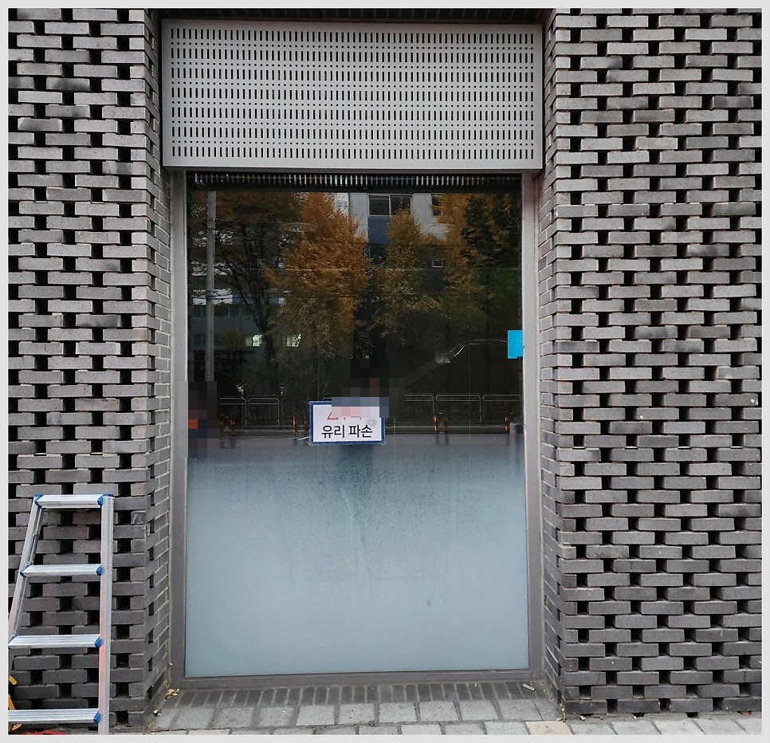
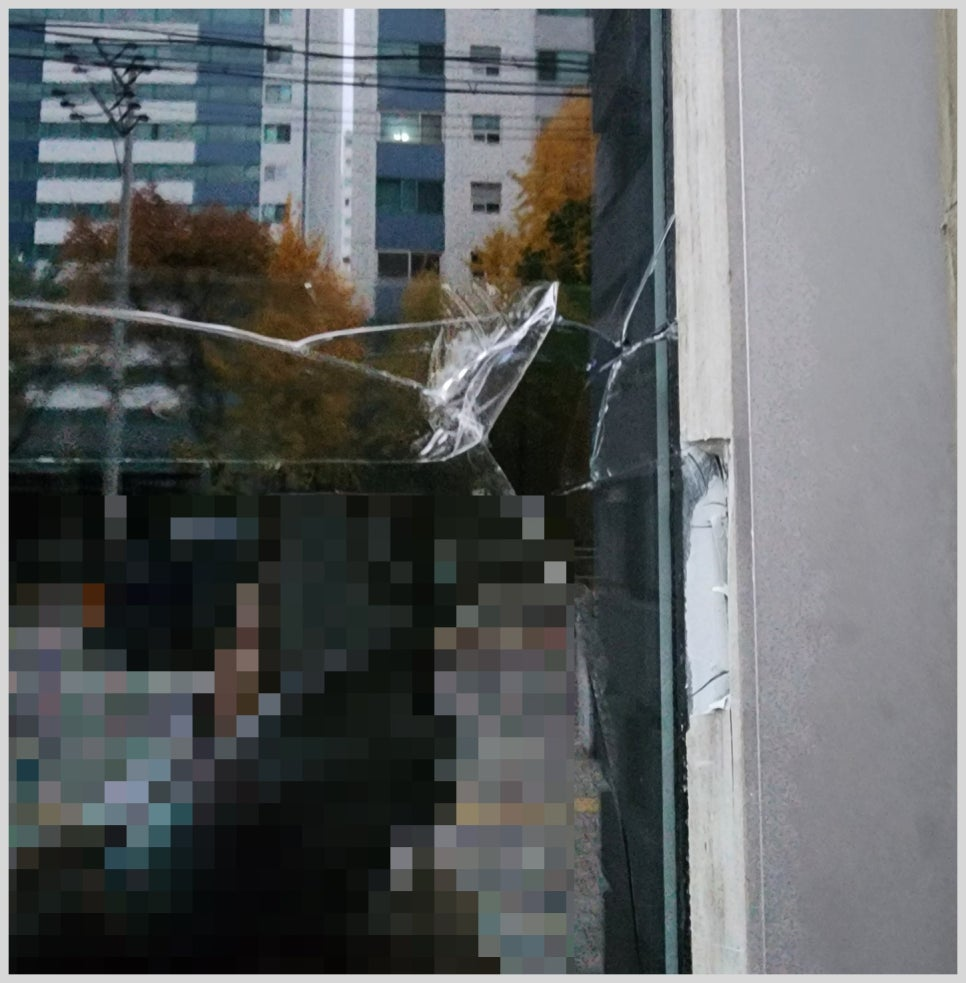
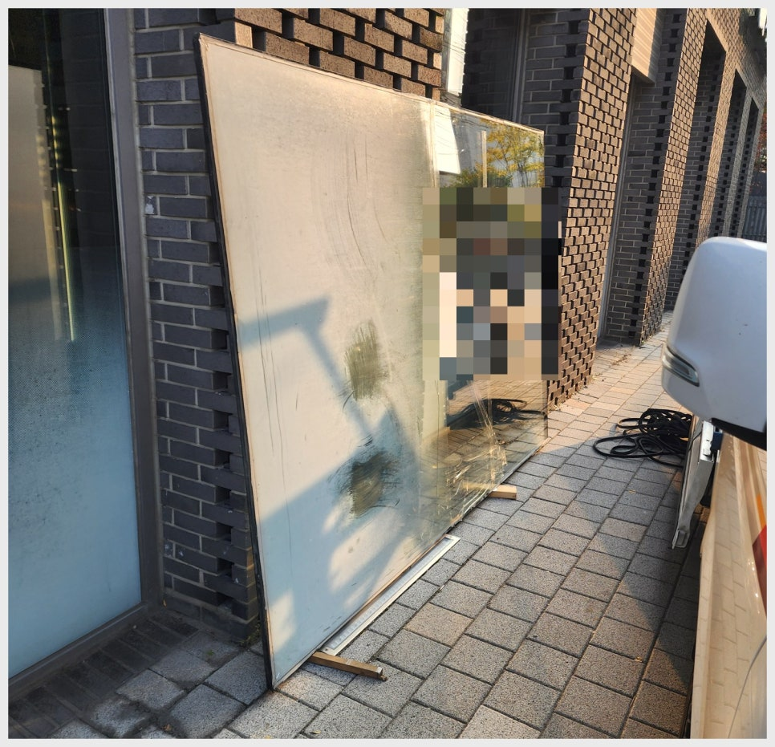

단열간봉 새 판으로 바꾸기 전에 가장 자주 듣는 말은 "금 간 한 겹만 갈 수 있나요?"입니다. 서울 성동구 성수동의 한 가게도 정면 큰 창 위쪽 귀퉁이에 금이 가서 같은 질문으로 연락을 주셨습니다. 두 겹이 한 몸으로 만들어지는 유리라 세트째 새로 맞추되, 틀은 상태가 좋아 그대로 살렸습니다.
한눈에 보기
| 작업 | 가게 정면 큰 창 페어유리 1세트 교체(기존 틀 재사용) |
|---|---|
| 지역 | 서울 성동구(성수동) |
| 장소 | 1층 가게 앞 큰 창, 윗변 바로 위에 셔터 박스 |
| 유리 | 24T 단열간봉 복층유리, 기존과 같은 크기 |
| 장비 | 흡착기, 나무 받침, 둘레 마감용 실리콘 |
| 일정 | 오전 9시 반쯤 기존 판 철거, 11시 20분쯤 마감 |



한 겹만 금 갔는데 왜 세트째 바꾸나요? 유리결로와 김서림 때문입니다
페어유리는 판 두 장 사이에 간봉을 넣어 공기층을 두고, 둘레를 실링으로 막아 공장에서 한 덩어리로 출고됩니다. 금 간 쪽만 뜯어내면 이 봉합이 풀리고, 현장에서 다시 붙인 둘레는 공장 품질을 따라가지 못합니다.
그 틈으로 바깥 습기가 스며들면 두 장 사이에 유리 김서림이 생기거나 안쪽이 뿌옇게 흐려집니다. 닦을 수 없는 자리라 한번 생기면 결국 다시 바꿔야 해서, 처음부터 한 세트를 같은 치수로 주문했습니다.
단열간봉 새 판은 어떻게 맞추고, 틀은 왜 그대로 썼나요?
기존 판은 오른쪽 세로 틀에 닿은 가장자리에서 금이 시작해 가로로 길게 번져 있었고, 그 틀 옆에는 하얀 실리콘 덩어리가 남아 있었습니다. 충격, 틀에 눌린 힘, 햇볕과 그늘의 온도 차 가운데 무엇 때문인지는 사진만으로 가르기 어려워 원인을 단정하지 않았습니다.
대신 틀을 살폈더니 휘거나 벌어진 곳이 없었습니다. 그래서 틀은 두고, 공기층 테두리에 단열간봉이 들어간 24T 판을 기존 크기대로 공장에 주문했습니다. 이런 판은 치수에 맞춰 제작하므로 실측 뒤 며칠이 지나야 교체 날을 잡을 수 있습니다.
이 현장 작업 순서
- 이른 아침 바깥에서 창 전체와 금이 시작된 귀퉁이를 찍어 두었습니다.
- 오전 9시 반쯤 흡착기로 판 면을 잡고, 윗변이 셔터 박스에 걸리지 않도록 기울이는 각도를 조절하며 기존 판을 빼냈습니다.
- 떼어 낸 판은 건물 벽에 기대고 밑에 나무를 받쳐, 바닥 블록에 모서리가 직접 닿지 않게 했습니다.
- 오전 10시 전에 새 판을 틀 안에 앉히고, 아래 귀퉁이의 제품 라벨(제조사·규격 표시)을 확인했습니다.
- 유리와 틀 사이 둘레를 실리콘으로 빈틈없이 채워 11시 20분쯤 마무리했습니다. 아래쪽 무늬 시트는 이때 아직 붙이기 전이었습니다.
가게 큰 창 단열유리 교체 비용은 무엇으로 정해지나요?
유리 값보다 현장 여건이 금액을 더 크게 움직입니다. 세로 2m가 넘는 큰 창은 판 무게가 100kg을 웃도는 일이 흔해 최소 두 명과 흡착기가 필요하고, 이번처럼 윗변 바로 위에 셔터 박스가 있으면 빼고 넣을 여유 공간이 좁아 시간이 늘어납니다.
사양도 변수입니다. 단열간봉 여부, 로이 코팅 유무, 아래쪽 무늬 시트를 다시 붙일지에 따라 제작비가 달라집니다. 그래서 금액은 미리 못 박지 않고, 사진과 대략적인 치수를 받아 본 뒤 안내해 드립니다.
자주 묻는 질문
- Q. 교체 날까지 금 간 유리는 어떻게 두면 되나요?
- 유리 앞에 파손 안내를 붙이고 사람이 기대거나 부딪히지 않게 막아 주세요. 금 끝에 네임펜으로 작은 표시를 해 두면 며칠 새 번졌는지 바로 알 수 있습니다. 테이프를 겹겹이 두르는 것보다 금 근처와 창 전체를 한 장씩 찍어 두는 편이 견적과 보험 접수에 더 도움이 됩니다.
- Q. 새 판을 넣으면 아래쪽 무늬 시트는 어떻게 되나요?
- 기존 판에 붙어 있던 시트는 판과 함께 나가므로, 원하시면 새 판에 다시 붙여야 합니다. 이 현장도 마감 직후에는 위아래가 모두 투명했습니다. 다시 붙일지에 따라 금액이 달라지니 견적 때 함께 말씀해 주세요.